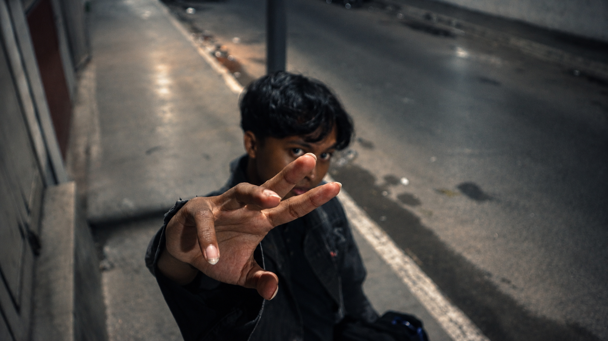
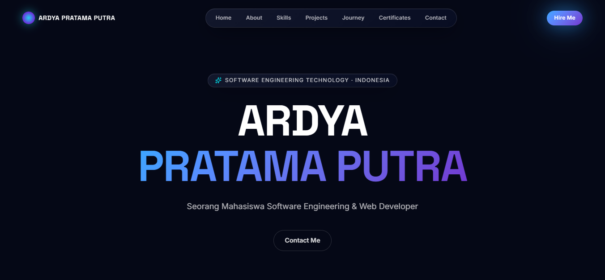

Arahkan kamera ke gambar marker pada kartu nama untuk memunculkan portofolio AR.

Mahasiswa D4 Teknologi Rekayasa Perangkat Lunak (TRPL) yang antusias dalam eksplorasi teknologi Augmented Reality dan pengembangan web.
Memiliki ketertarikan mendalam pada desain antarmuka, Game Developer, prompt sistem untuk menghasilkan pengalaman digital yang modern dan imersif.
